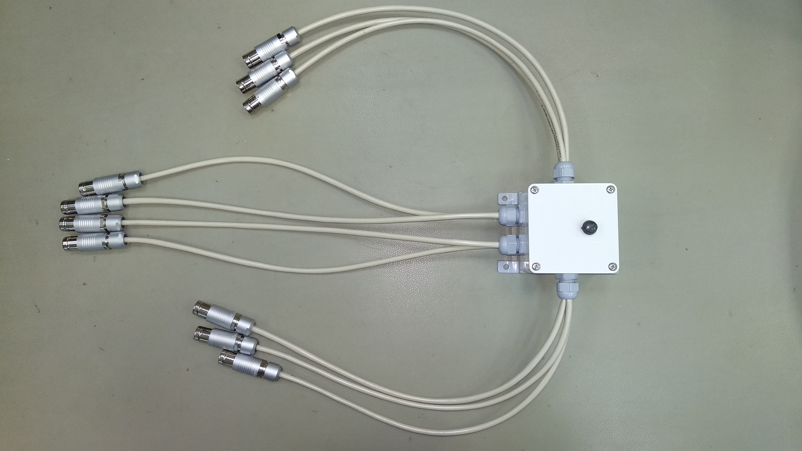
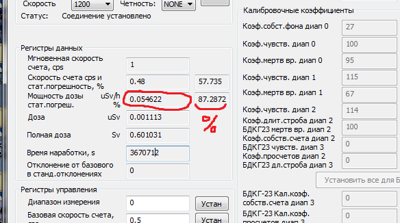
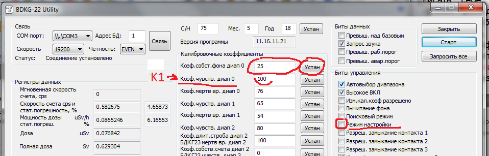

БДКГ-22/23. Настройка фона
Каждый БДКГ-22 настраивается на фоне примерно 1/2 дня - день (всё зависит от необходимой точности показаний), поэтому если настраивать блоки по-одному (а блоков много), на настройку всех блоков удет целая вечность. С другой стороны, у БДКГ-22/23 нет адреса (точнее у всех блоков, как правило, 1-й адрес), поэтому подключить их все к одному компьютеру стандартными методами не получиться. Для решения этой задачи следует использовать специального "паука", суть его работы заключается в селективном подключению к нужному блоку без разрыва питания к остальным БД, таким образом все подключенные блоки находятся в режиме подсчета значения фона, а выбор нужного блока для снятия показаний осуществляется поворотом переключателя. Одновременно можно подключать до 10-и БДКГ-22/23.
- Подключить все блоки к "пауку".
- Запустить BDKG22_Utility
- Войти в "Режим расширенных возможностей"
- Выбрать необходимый СОМ порт, нажать "Связь"
- Нажать "Старт", затем "Сброс усреднения"
- Переключить "паука" к следующему блоку, нажать "Связь", "Старт", затем "Сброс усреднения"
- Повторить для всех блоков
- Оставить блоки на 3-4 часа. Пусть набирают фон. На всё время настройки фона следует избегать работ с источниками вблизи БД
- Через 3-4 часа (погрешность должна опуститься примерно до 2,5%) подключится к каждому блоку и проверить показания.  Значение фона должно быть 100 нЗв/ч () — т.е. 0,100 uSv/h
- Если значение фона равно 0,100, нажать "Сброс усреднения" и оставить еще на 3-4 часа — для перепроверки
- Если после повторного цикла фон остался в требуемых пределах (98-102) — блок можно отключать, работа с ним закончена
- Для разблокировки кнопок управления — еще раз набрать слово serial
- Если программа считывает показания с БД (т.е. уже была нажата кнопка "Старт"), нажать "Стоп"
- Поставить флажок "Режим настройки"
- Записать себе (в Excel, например): номер блока, мощность дозы, значение "Коэф.собст.фона диап 0", процент погрешности
- В поле "Коэф.собст.фона диап 0" поставить нужный коэффициент. Если мощность дозы нужно увеличить, то коэффициент следует уменьшить; если мощность дозы нужно уменьшить, то коэффициент следует увеличить
- Обязательно снять флажок "Режим настройки"(не забывать, при включенном "режиме настройки" БД считает по другому алгоритму и данные будут сильно отличаться от правильных! (показания ниже ~ в 1,5 раза)) 
- Нажать "Старт"
- Нажать "Сброс усреднения"
- Перепроверить показания через 3-4 часа
- для БДКГ-22: 17 (раньше было 28)
- для БДКГ-23: 9 (раньше было 19)
- для БДКГ-23/1: 25
Чтобы не подбирать значение коэффициенты наугад, можно воспользоваться следующей формой,
Скорость счета
Мощность дозы
К1 ("Коэф.чувств. диап 0")
Коэфффициент:
или программкой
или Excel файлом, где: Count - "Скорость счета", МД - желаемое значение мощности дозы (100), К1 - значение "Коэф.чувств. диап 0". В поле "Расч.Знач. К0" выводится расчитанное значение коэффициента — "Коэф.собст.фона диап 0"